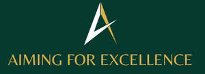
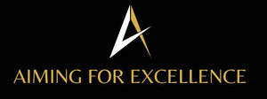

Trade Mark Journal No.2025/025 20 June 2025
UK00004212653 2 June 2025 (41)
Mark 1

Mark 2

- Class 41
- Education and training; Education, teaching and training; Training and education services; Education and training services; Education and training consultancy; Vocational education and training services; Provision of training and education; Provision of education and training; Computer education training; Vocational training; Education services relating to vocational training; Linguistic education and training services; Computer education training services; Training; Education; Training or education services in the field of life coaching; Career counselling relating to education and training; Educational and training services; Guidance (Vocational -) [education or training advice]; Vocational guidance [education or training advice]; Career counselling [training and education advice]; Medical training and teaching; Vocational training services; Career and vocational training; Vocational education; Vocational training courses (Provision of -); Teacher training services; Education and training in the field of business management; Vocational skills training; Training courses; Employment training; Career advisory services (education or training advice); Education and training in the field of occupational health and safety; Education and training services in the field of occupational health and safety; Education services relating to business training; Training of teachers; Education and instruction; Education and training in the field of music and entertainment; Education academy services; Academy education services; Academy services (Education -); Vocational skills training (Provision of -); Training and further training consultancy; Training and instruction; Providing of training, teaching and tuition; Education and training in the field of automotive engineering; Postgraduate training courses; Teaching of diet education; Academies [education]; Education and instruction services; Educational and training programs in the field of risk management; Provision of training courses; Training courses (Provision of -); Provision of training courses in personal development; Training services; Education academy services for teaching construction drafting; Education and training services in relation to business management; Career counseling [education]; Instructional and training services; Educational services for providing courses of education; Organisation of training courses; Providing courses of training; Educational and training services relating to healthcare; Education academy services for teaching acting; Consultancy relating to vocational skills training; Education services relating to the training of personnel in food technology; Education academy services for teaching languages; Training in philosophy; Educational certification services, namely, providing training and educational examination; Provision of education courses; Consultancy services relating to the education and training of management and of personnel; Educational and training services relating to sport; Arrangement of training courses in teaching institutes; Physical education instruction; Engineering training college services; Coaching [training]; Training of sports teachers; Courses (Training -) relating to science; Providing continuing medical education courses; Courses (Training -) relating to research and development; Courses (Training -) relating to medicine; Training in administration; Residential training courses; Engineering training services; Training consultancy; Vocational education in the field of mechanics; Education services; Postgraduate training courses relating to engineering technology; Fitness training services; Vocational education relating to self-defence; Provision of training courses for young people in preparation for employment; Courses (Training -) relating to engineering; Education academy services for teaching art history; Religious training; Courses (Training -) relating to finance; Organisation of conferences relating to vocational training; Residential education courses; Recreation and training services; Life coaching (training); Entertainment, education and instruction services; Postgraduate training courses relating to management studies; Providing continuing nursing education courses; Training in the development of computer programs; Language training; Courses (Training -) relating to management; Providing continuing dental education courses; Provision of training; Organisation of training seminars; Practical training services; Providing training and educational examination for certification purposes; Publication of educational and training guides; Business training; Physical training services; Consultancy services relating to the development of training courses; Adult training; Courses (Training -) relating to banking; Services of schools [education]; Courses (Training -) relating to insurance; Educational and training services relating to games; Health education; Pre-school education; Personal development training; Training services for nurses; Educational services relating to sales training; Aerobics training services; Physical education; Education services for imparting language teaching methods; Education and training services in relation to real estate management; Provision of training courses for young people in preparation for careers; Sports training; Training in sports; Conducting training courses relating to nutrition online; Provision of facilities for employment skills training; University education services; Training of swimming teachers; Arranging of training courses; Management training services; Training in business skills; Training related to nutrition; Career information and advisory services (educational and training advice); Organising of education seminars; Education examination; Education courses relating to automation; Courses (Training -) relating to accountancy; Physical education services; Health and fitness training.
Razia Aslam